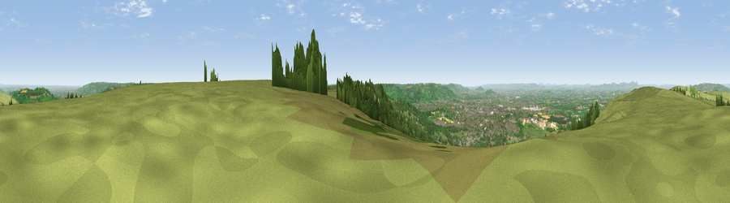

Viewpoint near Cleeve Hill
#2681 in England · top 7% of its area beats it · near Cleeve HillWhere it is
The exact computed spot (SO 99238 24988). Click the marker for map links.
The view, rendered

A 360° render of this exact spot computed from the terrain model, tree cover and land cover — summer colours, afternoon light, calibrated against photographs of famous viewpoints. Real trees, hedges and buildings will differ in detail.
The panorama
Grey silhouette: terrain skyline in each direction (720 bearings, Earth curvature and refraction included). Dashed green: skyline with trees (+15 m) and buildings (+8 m) as obstacles. Blue strip: how far the ground is visible on each bearing.
Where the view opens
Wedge length = distance to the farthest visible ground on that bearing (vegetation-aware). Rings at 10, 25 and 50 km.
What fills the view
56% grassland · 25% woodland · 11% built-up · 8% cropland
Angular shares of the visible panorama (visual magnitude), not map area. Landscape diversity 0.49 (0–1 Shannon).
Key numbers
More beautiful places nearby
The staircase of upgrades: each row has a higher view potential than everything closer. Driving times are estimates from straight-line distance, calibrated against real road routing — check an actual route before setting out.
| Place | Direction | Drive | Score |
|---|---|---|---|
| Viewpoint near Cleeve Hill | NW · 1 km | ~3 min | 79.6 |
| Cleeve Hill | NNW · 2 km | ~4 min | 79.8 |
| Nottingham Hill | NNW · 4 km | ~8 min | 80.9 |
| Viewpoint near Bredon's Norton | NNW · 15 km | ~27 min | 81.3 |
| Bredon Hill | NNW · 16 km | ~28 min | 83.0 |
| Millennium Hill | WNW · 27 km | ~44 min | 86.9 |
| Worcestershire Beacon | NW · 30 km | ~47 min | 87.1 |
| Viewpoint near West Quantoxhead | SW · 120 km | ~144 min | 87.9 |
51.92341, -2.01250 · source: screening · position refined by local search. Computed location — check access rights before visiting.